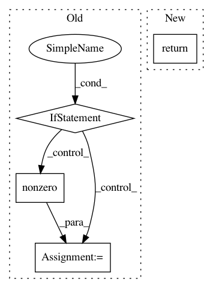

23320c8733b232b72606dbcc7f79a0d51d3fcc39,scanpy/preprocessing/_deprecated/highly_variable_genes.py,,filter_genes_cv_deprecated,#Any#Any#Any#,200
Before Change
Reference: Weinreb et al. (2017).
if issparse(X):
raise ValueError("Not defined for sparse input. See `filter_genes_dispersion`.")
mean_filter = np.mean(X, axis=0) > Ecutoff
var_filter = np.std(X, axis=0) / (np.mean(X, axis=0) + .0001) > cvFilter
gene_subset = np.nonzero(np.all([mean_filter, var_filter], axis=0))[0]
return gene_subset
def filter_genes_fano_deprecated(X, Ecutoff, Vcutoff):
After Change
def filter_genes_cv_deprecated(X, Ecutoff, cvFilter):
Filter genes by coefficient of variance and mean.
return _filter_genes(X, Ecutoff, cvFilter, np.std)
def filter_genes_fano_deprecated(X, Ecutoff, Vcutoff):
Filter genes by fano factor and mean.
In pattern: SUPERPATTERN
Frequency: 5
Non-data size: 4
Instances
Project Name: theislab/scanpy
Commit Name: 23320c8733b232b72606dbcc7f79a0d51d3fcc39
Time: 2019-08-20
Author: flying-sheep@web.de
File Name: scanpy/preprocessing/_deprecated/highly_variable_genes.py
Class Name:
Method Name: filter_genes_cv_deprecated
Project Name: brian-team/brian2
Commit Name: f8b5a82bde87721f9d5500c00e1505c8fd42f7b4
Time: 2018-08-28
Author: marcel.stimberg@inserm.fr
File Name: brian2/core/functions.py
Class Name:
Method Name: timestep
Project Name: Microsoft/nni
Commit Name: 165756cc19a19db0e75c128ccc97eff3579af1c3
Time: 2020-12-05
Author: Yuge.Zhang@microsoft.com
File Name: examples/nas/proxylessnas/ops.py
Class Name: MobileInvertedResidualBlock
Method Name: forward
Project Name: scipy/scipy
Commit Name: 62008ad8e0e399f2ea318c4057fdcc45749b14d1
Time: 2013-08-09
Author: blake.a.griffith@gmail.com
File Name: scipy/sparse/sputils.py
Class Name: IndexMixin
Method Name: _boolean_index_to_array
Project Name: theislab/scanpy
Commit Name: 23320c8733b232b72606dbcc7f79a0d51d3fcc39
Time: 2019-08-20
Author: flying-sheep@web.de
File Name: scanpy/preprocessing/_deprecated/highly_variable_genes.py
Class Name:
Method Name: filter_genes_fano_deprecated